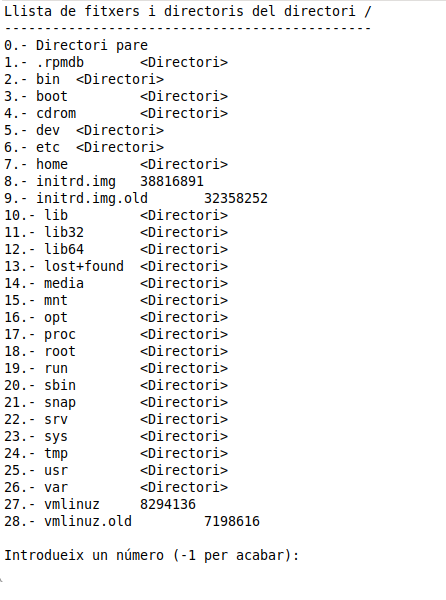

Accés a Dades
Exercici
Exercici 1
Realitza un programa en un fitxer anomenat Exercici_1.kt en el paquet exercicis, que permeta navegar pels directoris de la unitat principal del sistema d'arxius.
- Ha de començar per l'arrel (/ en Linux; c:\ en Windows). Recordeu que el mètode estàtic File.listRoots()[0] ens dóna l'arrel.
- Ha d'indicar el directori que està mostrant.
- Ha de posar com a primera opció anar al directori pare (opció 0).
- Ha de posar un número davant de cada arxiu o subdirectori que s'està mostrant. Observeu que aquest número comença amb 1 (el 0 és per al pare). Si us heu guardat en un array la llista de fitxers i directoris del directori actual, recordeu que el primer element és el 0 (però vosaltres el mostrareu amb un 1 davant).
- En cas de ser un arxiu ha de dir la grandària. En cas de ser un subdirectori, ha d'indicar-lo amb <directori>
- Posteriorment ha de deixar introduir un número. Les opcions seran:
- -1 per acabar
- 0 anar al directori pare.
- Si s'ha triat el 0 (per anar al pare) s'ha de controlar que existeix el pare (en el cas de l'arrel, no en té). Si no en té, no s'ha de fer res.
- Qualsevol altre número ha de servir per canviar a aquest directori com a directori actiu. Si era un fitxer, no ha de fer res (en la imatge, no s'ha de poder anar al 9, ja que és un fitxer).
- S'ha de controlar que hi ha permís de lectura sobre un directori, abans de canviar a ell, sinó donarà error (en la imatge, per exemple, segurament no es podrà canviar al directori root, ja que no tindrem permís de lectura sobre ell). Aquesta comprovació s'ha de fer abans de canviar al directori triat.
- I s'ha de controlar que el número introduït està en el rang correcte (en la imatge, de -1 fins a 28)
La següent imatge mostra el resultat:

Voluntari
Modifica l'anterior per a que també ens proporcione dades sobre si és un directori, els permisos, grandària i data de modificació a l'estil de Linux quan fas ls -l . L'aspecte podria ser aquest:

Llicenciat sota la Llicència Creative Commons Reconeixement NoComercial CompartirIgual 2.5